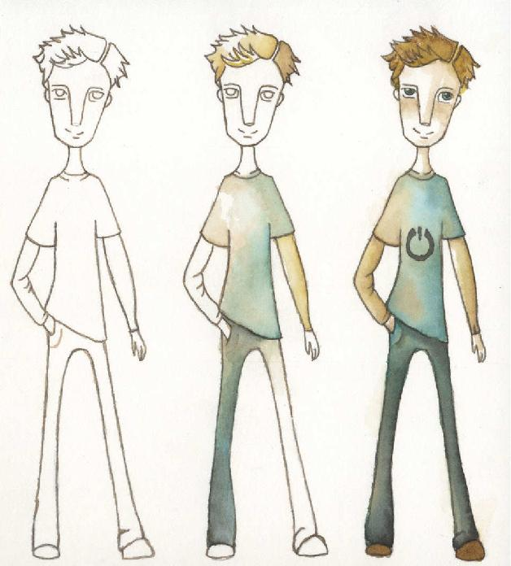

¿Por qué cambiar?
Leyendas fundacionales
Casi todas las actividades económicas y las disciplinas científicas tienen leyendas fundacionales. Por ejemplo, dicen que la física moderna nació cuando a Newton, que dormía bajo un manzano, le cayó una fruta en la cabeza. Los primeros filósofos, según nos cuenta la tradición, compartían sus conocimientos en el ágora de Atenas, un lugar idílico donde discípulos y maestros podían debatir abiertamente sus preocupaciones.
Y así pasa con todas las ciencias y actividades humanas. Poco importa si son ciertas o no esas leyendas. Probablemente algo tengan de verdad, y otra parte haya sido inventada. Pero lo cierto es que influyen en nuestra percepción actual. Y el desarrollo de software no podía ser menos.
Los nostálgicos aseguran que hubo un tiempo en que los clientes nos decían que aplicación deseaban, nos dejaban trabajando por un largo tiempo, y cuando volvíamos con el producto desarrollado, se alegraban porque cumplía plenamente con sus expectativas. Es más, no sólo los clientes no necesitaban ver a los desarrolladores durante la ejecución del proyecto, sino que tampoco los desarrolladores necesitábamos comunicarnos con los clientes, ya que contábamos con una documentación tan exhaustiva y lograda sobre el producto a construir, que cualquier comunicación podía arruinar nuestro trabajo.
Se nos ha contado que en aquellos tiempos, los clientes desconocían que el software era un producto modificable, aunque ya algunos se estaban preguntando qué significaba el prefijo “soft” en la palabra en cuestión. Por otro lado, ese no era un problema, pues ¿quién querría modificar algo tan perfecto?
Los profesionales de desarrollo de software, debido a estas condiciones, podían planificar sus proyectos con seguridad, sabiendo que, una vez iniciado el proyecto, no había ningún peligro de que el plan cambiase. La tranquilidad que brindaba la previsión de todo futuro posible era muy reconfortante.
Además, existía –y existe– el dogma del mayor costo del cambio conforme el proyecto avanza, lo cual favorecía que cualquier modificación fuera vista como una amenaza. No es que el dogma sea absolutamente falso [Boehm1981], pero más que inducirnos a rechazar pedidos del cliente, debería animarnos a buscar formas más sencillas de implementarlos.
En realidad, ninguno de los autores de este libro conoció tiempos tan felices. Lo cierto es que, tanto si hubieran existido esos tiempos, como si se tratase de mitos de la historia del desarrollo de software, hoy vemos que sin duda las cosas no son así. Sin embargo, se trabajaba –y muchos todavía lo hacen– pensando que las cosas funcionaban de esa manera.
Errores de inmadurez
El desarrollo de software es una disciplina joven. Hace poco más de 60 años que se programan computadoras, hace 40 se empezó a intentar sistematizar un proceso, y hace unos 30 se empezaron a introducir paradigmas que permitieran el manejo de la complejidad. Si comparamos con las ingenierías tradicionales, que en general tienen varios siglos de antigüedad, no deberíamos asombrarnos de que la nuestra sea considerada una actividad humana inmadura.
Prácticamente no existe ciencia que se haya aplicado en sus inicios sin cometer grandes errores. Los médicos de la antigüedad pretendían curar a sus enfermos con purgas y sangrías, que en ocasiones aceleraban la llegada de la muerte.
Algunos errores no han sido tan graves, sino que solo fueron simplificaciones fácilmente refutables. Pero aun estas simplificaciones, muchas veces han puesto en entredicho la disciplina en sus momentos fundacionales. La economía, dicen los especialistas, nació con el libro de Adam Smith, que explica su funcionamiento en un mundo ideal de competencia perfecta. Cuando se vio que esa simplificación era excesiva, muchos pretendieron predicar la invalidez de toda la ciencia económica, por lo que fue necesario investigar en el marco de hipótesis más realistas para devolverle el prestigio que se estaba esfumando.
Algo parecido pasó con la astronomía, al punto que el sistema de universo definido por Ptolomeo dos siglos antes de Cristo, seguía siendo utilizado en el siglo XV, hasta que Copérnico lo puso en entredicho, provocando gran contrariedad en el mundo académico de la época, que no estaba dispuesto a que se modificasen las nociones esenciales de su ciencia.
Con el desarrollo de software también han pasado estas cosas. Se han cometido gruesos errores iniciales que han provocado el fracaso de muchos proyectos y el abandono de iniciativas de informatización. Más tarde, se han establecido algunos fundamentos basados en supuestos simplistas, o simplemente erróneos, que también han hecho perder prestigio a la disciplina. Además, el ambiente académico es reacio a pensar en términos nuevos, a pesar de la corta historia del software.
Por ejemplo:
• La idea de la división del trabajo en roles, basada en una visión tayloriana [Aitken 1960], llevó a que se crearan varias especialidades, y que cada una tuviera una labor totalmente diferenciada. Un analista funcional jamás se comparaba con un programador (¡Dios nos libre!), dado que estos últimos eran el equivalente de los obreros industriales en la producción de software, gente a la que no se le pedía pensar, sino solo trabajar. Para pensar estaban los analistas, que sabían lo que querían los clientes, cuales eran sus necesidades y como lograr satisfacerlas desde lo técnico. En definitiva, cada persona, según su rol, buscaba un objetivo diferente. A nadie se le ocurría pensar que en realidad se necesitaba un equipo multidisciplinario trabajando en pos de entregar valor al cliente.
• También se dio importancia excesiva a los documentos. Partiendo de la idea, tal vez razonable, de dejar registro de las decisiones que se toman en un proyecto mediante documentos, y siguiendo con la noción de que cada perfil se debía ceñir a sus tareas específicas, se llegó al extremo de que la única forma de comunicación en los proyectos eran los documentos. Los analistas especificaban requerimientos, que era lo que podían ver los diseñadores, programadores y testers. Al fin y al cabo, ¿qué otra cosa debían conocer los programadores y testers de su proyecto? Los diseñadores también especificaban el diseño con documentos, probablemente acompañados de complejos y detallados diagramas. Si esos diagramas luego debían ser mantenidos conforme cambiaba el software, no era un problema que se tuviese en cuenta.
• Los diseñadores se podían lucir con complicados diseños que mostraran su genialidad. Los programadores, toda vez que podían, introducían código que nadie sino ellos podrían entender. Y eso los hacía felices a todos, sin preguntarse si era bueno para el trabajo final.
Porque el producto final también había pasado a ser secundario. Lo único importante eran los documentos, que definían qué se iba a desarrollar y cómo se iba a construir la aplicación. El software en sí mismo no era lo que importaba, y hasta se fantaseaba con la generación automática de código para enfatizar esta idea, pensando en un futuro feliz en el que la codificación humana fuera innecesaria.
Pero llegó el día en que todo eso ya no se pudo sostener más.
La evidencia nos condena
Todos conocemos casos de proyectos de software que han fracasado. Ha habido problemas en pequeños proyectos, más o menos intrascendentes (salvo para quienes los han sufrido), y hay casos de grandes fracasos, de esos que mencionan los libros. A veces los particulares parecen ser solo eso, y los desechamos pensando que son una pequeña proporción de los proyectos.
De Marco y Lister mostraban1, hace ya 25 años, la gran proporción de proyectos de software que fracasaban. Tal vez pensemos que es un dato anacrónico.
Ya no es tiempo de seguir equivocándonos
En los tiempos que corren, los clientes quieren todo lo antes posible. Ya no se puede, como en otros períodos, decirle a un cliente que vamos a trabajar durante un año y le mostraremos todo cuando esté terminado. Ellos quieren ver el software funcionando, lo antes posible, hacer observaciones sobre el mismo, saber cómo vamos en el proyecto y cuánto falta para el feliz día en que determinada funcionalidad esté lista.
Como además los clientes se han dado cuenta de que el software es maleable, que admite cambios aún durante su desarrollo, están constantemente buscando mejorar el producto. Si bien en un punto eso puede irritarnos, es parte ineludible de la naturaleza del software y, por lo tanto, debería serlo también de nuestro trabajo.
Precisamente, la necesidad de realizar cambios en los proyectos lleva a que los planes no puedan ser rígidos. Hay que entender que la planificación debe ser algo vivo, algo que se puede adaptar en tiempos, en alcance, e incluso por cuestiones derivadas de la incertidumbre sobre el diseño de la solución.
Otro inconveniente es el costo del cambio, que no por ser posible es barato. Adicionalmente, ese costo empeora si el diseño es complicado y el código poco legible.
Además, el software que desarrollamos hoy es tremendamente más complejo que el de décadas atrás. Esa complejidad no se puede encarar con procesos de desarrollo que solo funcionan razonablemente bien con pequeños programas. Lo mismo aplica a la calidad: un producto complejo necesita ser construido con la calidad en mente. Esta no puede ser algo que agregamos al producto a posteriori.
Por otro lado, los roles con objetivos contrapuestos pueden hacer perder el objetivo principal, que es entregar valor al cliente. Este valor no puede estar en los documentos, que son artefactos que nos sirven a los desarrolladores durante la construcción. ¿O alguno de nosotros, cuando quiere que le construyan una casa, está dispuesto a recibir planos a cambio?
Los clientes exigentes nos obligan a que tengamos criterios de aceptación, sin ambigüedad, que nos indiquen cuando hemos cumplido lo que ellos requieren y cuando podemos dar por concluido el desarrollo de una funcionalidad. Y esos criterios nos van a servir también a nosotros para medir el avance, aun cuando los clientes no sean tan exigentes en ese punto.
Como consecuencia de todo lo dicho, el tiempo en que nuestro optimismo nos hacía pensar que los errores y descuidos podían ser tolerados, o incluso no ser percibidos, ha quedado atrás. Y eso exige pensar en otras maneras de desarrollar.
Buscando encauzar al desarrollo de software
Siguiendo con la analogía de las demás ciencias y técnicas, no siempre es fácil romper con lo establecido para cambiar métodos y procedimientos. Hace falta ver los errores, luego evidenciarlos y finalmente proponer cambios mostrando sus ventajas. Muchos pretenderían mantener sus anteojeras, o a lo sumo realizar pequeños retoques a las visiones del pasado. No les fue fácil a Heisenberg y a Einstein poner en entredicho a la física clásica con proposiciones tan poco intuitivas que parecían descabelladas. Algo parecido debe haberle ocurrido a Lord Keynes cuando se atrevió a proponer cambios en la lógica de la macroeconomía. O a los médicos medievales que, de a poco, introducían cambios aprendidos en la España islámica.
Pero parece obvio que si hay problemas y se están cometiendo errores, habría que tratar de enfrentarlos y corregirlos. En el desarrollo de software seguimos purgando pacientes hasta matarlos por deshidratación. Esto no es serio en una disciplina que, si bien es joven, ya cumplió 60 años. Por eso es que a fines del siglo pasado se empezaron a sugerir las mejoras que llevaron a los métodos ágiles.
En efecto, resulta totalmente insólito plantear que los proyectos de software se alarguen por la necesidad de generar documentación innecesaria, que cuando un cliente pida un cambio estemos con la guardia en alto para que no arruine nuestro diseño, que los equipos sean en realidad compartimientos estancos de perfiles que solo se comunican mediante documentos, que los clientes deban conformarse con ver documentos de requerimientos y de diseño en vez de software funcionando, que los planes estén tallados en piedra.
Y si a fines del siglo pasado no podíamos seguir pretendiendo todo eso, mucho menos una vez que surgieron personas que, como hicieran en otros tiempos y desde otras disciplinas Copérnico, Heisenberg, Einstein, Colón o Keynes, han puesto en entredicho unas cuantas verdades instaladas y nos han demostrado que el desarrollo de software puede ser más eficiente, más cooperativo, más transparente y menos rígido de lo que había sido hasta ese momento. Hoy, un poco más de una década más tarde, es todavía más inverosímil que haya gente que no perciba que los principios en los que nos habíamos basado tenían serios errores de concepción, que hacían que los métodos derivados de los mismos fueran inadecuados en determinados contextos.
La naturaleza del software al rescate
Ahora bien, varias de las respuestas a los problemas planteados están en el propio software y en las peculiaridades de los proyectos de desarrollo del mismo.
Expliquémonos:
• A menudo se dice que el software es maleable, es decir, que se puede adaptar durante su construcción, y aun una vez terminado. ¿Qué mejor, entonces, que usar esa maleabilidad para poder ofrecer alternativas a nuestros clientes? ¿Por qué resistirnos tanto a los cambios que sabemos posibles?
• Por otro lado, el software es particionable y, por lo tanto, se puede construir por etapas, de modo tal que cada una implique que a la salida de la misma tengamos un producto, parcial, pero con valor para el cliente. ¿Por qué no usar esta característica para darle visibilidad durante su construcción?
• Otra cuestión a la cual se le presta poca importancia es que el desarrollo de software implica la materialización de conocimiento en programas de computadora. ¿Por qué no usar las reuniones de captura de conocimiento para interactuar más con nuestros clientes y dentro del mismo equipo? ¿Por qué no aprovechar para socializar?
• Contrariamente a lo que sucede en otras disciplinas, el diseño y la construcción del producto no son procesos separados, uno único y el otro repetitivo, sino que se hacen en conjunto, con un único producto para cada diseño. Entonces, ¿por qué nos resistimos de manera tan apasionada a los cambios de diseño durante el desarrollo?
• El software es también susceptible de ser copiado en forma íntegra. ¿Por qué no aprovechamos esta característica para entregar productos de calidad?
• Si decimos que el software es extensible, ¿por qué nos resistimos a hablar de la evolución permanente de cada producto?
Es cierto que, otras veces, el propio software conspira para solucionar los problemas, como ocurre con la visibilidad del producto. En efecto:
• Al ser un producto invisible por definición, es complicado saber, durante el desarrollo, cuanto se ha construido y cuanto queda por construir. Por esto se ha vuelto necesario definir técnicas y métricas específicas para el software. Esta falta de visibilidad del producto también hace difícil que el cliente sepa rápidamente si lo que construimos es lo que él esperaba. Por eso es que conviene definir criterios de aceptación, que también permiten que el propio equipo de desarrollo pueda conocer cuando puede dar por terminada la construcción de determinada funcionalidad.
• Otro problema del software es su complejidad, muchas veces mencionada, pero poco comprendida cabalmente. En efecto, se habla con ligereza de sistemas medianos de, digamos cincuenta mil clases. ¿Somos conscientes de que no estamos hablando del equivalente de una máquina de cincuenta mil piezas, sino de una con cincuenta mil tipos de piezas distintas?
El resto lo cubren las personas
Otro aspecto característico del software es que es un producto construido en su totalidad por personas. Por eso es que la mayor parte de los problemas y de las soluciones debemos verlas más desde la sociología que desde la tecnología. Esto puede ser duro para la mayoría de nosotros, e incluso para quienes se desempeñan en roles gerenciales, que hemos sido formados más en tecnología que en disciplinas humanísticas. Sin embargo, deberíamos pensar que las habilidades sociológicas, aunque carezcamos de nociones formales, están en nuestro ADN y que las venimos practicando desde que nacimos. Por ejemplo:
• Durante milenios, hemos evolucionado comunicándonos cara a cara para poder entendernos y superar los malos entendidos, los equívocos, y todo lo que solo podemos expresar mirando a nuestro interlocutor. Por eso es importante no olvidar que esa es la manera más natural de comunicación entre humanos.
• Nuestra naturaleza social también hace que seamos propensos a formar equipos exitosos, que se sienten orgullosos de su creatividad y sus éxitos y, sobre todo, si los problemas resueltos fueron muy complejos. Estos equipos tienden a autoorganizarse, sin necesidad de impulsos externos, y a trabajar mejor cuanta más sinergia logren.
• Por último, contrariamente a lo que dicen algunos refranes, aprendemos de nuestros errores, y somos los únicos animales capaces de reflexionar sobre los mismos, para no volverlos a cometer. Y como contrapartida, tendemos a analizar y a repetir conductas que hayan llevado a resultados exitosos.
Ahora bien, dificultades también hay. Aunque en este caso las dificultades no suelen venir de las personas que trabajan, sino de prejuicios típicos del mundo corporativo, que atentan contra la naturaleza humana:
• Una de las nociones que más conspira contra la autoestima de las personas, y que afecta la calidad de lo producido por esta misma razón, es el considerar a las personas como “recursos”, pretendiendo que, como ocurre con otros recursos que afectan nuestro proyecto, se trata de piezas intercambiables. Eso lo pueden provocar tanto los gerentes de mentalidad industrial, como las metodologías que ponen el foco en que no importan tanto las personas como el seguimiento de un método supuestamente infalible.
• Asimismo, cuando por cuestiones de costos o cronograma, se impulsa a las personas a construir un producto de baja calidad, también se afecta la autoestima de todo el equipo de trabajo. En realidad, todo cronograma ajustado de manera irreal es percibido como una falta de respeto por los equipos experimentados. Si bien en algunas ocasiones se le puede pedir un compromiso a un equipo ante una necesidad puntual, esto funciona en la medida en que el equipo haga suyo este compromiso, y que realmente sea una excepción definida y acordada, no la regla. Las presiones ejercidas sobre las personas para que produzcan más no funcionan, simplemente porque el hecho de que se pueda obligar a alguien a estar más tiempo sentado en una silla, no implica que de esa manera se logre creatividad o productividad.
• Otro aspecto negativo es un entorno laboral que conspire contra la producción. Sillas y mesas incómodas, falta de luz, infraestructura inadecuada, no contar con el software necesario para desarrollar, restricciones de acceso a Internet que impiden investigar, son todos problemas que acarrean frustración y cuestan bastante más de lo que parece. Por eso, un buen gerente debe enfocarse en permitir que las personas trabajen cómodas y eficientemente más que en “hacer que trabajen”.
• Y por último, hay que confiar en las personas y en los equipos que las personas conforman. Si un gerente vive obsesionado por desarmar equipos que disfrutan del trabajo en conjunto, por temor a que formen grupos elitistas, terminará con trabajadores poco motivados y menos productivos. Si solo considera que están trabajando cuando los ven escribiendo código, y no cuando piensan, conversan con sus colegas, investigan soluciones en la web o se reúnen espontáneamente, solo va a lograr una actitud defensiva y poco productiva.
El manifiesto ágil
Así como Copérnico cuestionó los principios de la astronomía de su tiempo, o como Colón impugnó la teoría de la Tierra plana, hubo un conjunto de personas que se dieron cuenta de que las premisas en las que se basaba el desarrollo de software tenían fallas, y propusieron una serie de ideas para remediarlas.
Los cuestionadores de las premisas antiguas del desarrollo de software fueron un conjunto de 17 críticos2 de los procesos tradicionales, que se reunieron para redactar lo que denominaron el “manifiesto ágil” en febrero de 20013.
El manifiesto dice4:
“Estamos descubriendo formas mejores de desarrollar software tanto por nuestra propia experiencia como ayudando a terceros. A través de este trabajo hemos aprendido a valorar:
• Individuos e interacciones sobre procesos y herramientas.
• Software funcionando sobre documentación extensiva.
• Colaboración con el cliente sobre negociación contractual.
• Respuesta ante el cambio sobre seguir un plan.
Esto es, aunque valoramos los elementos de la derecha, valoramos más los de la izquierda.”
Los últimos 10 años
Ahora bien, si el manifiesto ágil tiene ya más de 10 años, ¿qué pasó desde entonces? ¿Hubo una adopción importante de los principios ágiles? ¿Hubo una mejora en los proyectos de desarrollo de software? ¿Se puede ver una correlación entre la mayor adopción de los métodos ágiles y la mejora en los proyectos? La encuesta [VersionOne2012], realizada a fines de 2012, parece indicar que las tres preguntas se pueden responder en forma positiva.
Respecto de la adopción, la encuesta nos muestra una mayor proporción de organizaciones usando métodos ágiles, a la vez que una mayor proporción de los proyectos en cada organización5. Incluso ha aumentado la adopción de métodos ágiles en equipos distribuidos.
Las otras dos preguntas no se encuentran respondidas en forma directa por la encuesta, pero los encuestados declaran haber obtenido mejoras gracias a su adopción del desarrollo ágil. Un 90% dice haber mejorado su habilidad para manejar cambios de prioridades. Otras ventajas observadas han sido bajar el tiempo en salir al mercado y la mejor alineación con el negocio.
La encuesta se sale del molde de aquellas que buscan mostrar mejoras en tiempos, costos, o apego a los requerimientos del cliente. En efecto, el movimiento ágil no considera al alcance de un proyecto como algo fijo, y si los tiempos o los costos mejoran, esto es más bien un efecto secundario. Para cualquier agilista, la calidad del producto, la visibilidad del proceso, la facilidad de adecuación a los cambios en las necesidades del cliente y el menor tiempo de retorno de la inversión son más importantes que cumplir con unos requisitos fijos y establecidos en el momento del lanzamiento del proyecto.
En resumen
Si las cosas no están funcionando bien, ¿Por qué no cambiar? ¿Por qué fingir que el desarrollo de software debe ser lo que no es? Al fin y al cabo, como vimos, la propia naturaleza del software y la actividad inherentemente humana que permite construirlo, nos ayuda en nuestra tarea de trabajar mejor. Entonces, ¿qué nos impide cambiar? ¿El miedo a lo desconocido? ¿No somos parte, acaso, de una disciplina joven, que no debería tenerle miedo al cambio?
Insistir en los errores, en el “no puede ser”, nos lleva al conservadurismo de Poincaré que, por aferrarse a antiguas concepciones físicas, no se atrevió a dar el salto que luego Einstein postularía: por eso hoy nos acordamos mucho más del segundo que del primero.
En eso estamos, pues. Avancemos.
Iterativo por naturaleza
En los últimos cuarenta años, no ha habido ningún modelo de proceso de desarrollo de software exitoso que no sea iterativo. Desde el proceso en espiral hasta el unificado, todos los procesos recomendados tanto desde la academia como la industria asumen una estructura de aproximaciones sucesivas para su desarrollo.
Sin embargo, como vimos en el capítulo anterior, son comunes múltiples visiones (el modelo en cascada) y prácticas (la planificación de largo plazo basada en tareas) que asumen un proceso en el que, en mayor o menor medida, se sabe todo lo importante al principio.
Muchas veces hemos escuchado enunciados con la clásica estructura de recomendación seguida de claudicación:
“Hay que hacer las pruebas en paralelo con el diseño, pero no podemos enseñarlo así porque es confuso”; o la otra de:
“Claro que el análisis puede ser influenciado por el diseño, pero de todas maneras siempre hay que hacer todo lo que pide el cliente, por eso se llaman requerimientos”.
En estos ejemplos, la vocación parece clara pero falta el coraje o la percepción profunda o la técnica para llevarla a buen término. En cada uno, se deja para después algo que debería hacerse antes y, por lo tanto, se asume en lugar de aprender o discutir. En fin, así nos va.
Parte del éxito de los métodos ágiles está en abrazar esa perspectiva de persona mirando al abismo, y proponer técnicas específicas para lidiar con la complejidad.
Ejemplos concretos son:
• El time-boxing, consistente en limitar el tiempo a utilizar antes que el alcance de las tareas, forzando un límite que podemos controlar siempre (el tiempo transcurrido) y usándolo como medida para controlar otros aspectos (alcance, avance, calidad, valor entregado, etc.).
• El desarrollo guiado por pruebas (Test Driven Development o TDD), consistente en escribir las pruebas antes de escribir el código y hacerlo iterativamente de manera tal que las mismas puedan ser ejecutadas una y otra vez para garantizar que el código evoluciona correctamente.
• Las prácticas de planificación estratégica y táctica6 que se ejecutan iterativamente durante el proyecto.
En este capítulo nos proponemos revisar las razones por las cuales creemos que los procesos iterativos y por incrementos son la evolución natural del desarrollo de software.
El desarrollo de software como proceso iterativo
La principal confusión reinante alrededor del proceso de desarrollo consiste, como vimos en el capítulo anterior, en una mirada basada en actividades disjuntas (análisis, diseño, implementación, pruebas, etc.) que son llevadas a cabo por gente que se comunica poco y mal, principalmente a través de documentos. Esta confusión hace fácil identificar implícitamente el proceso con el modelo en cascada, es decir, con una secuencia de actividades (por ejemplo, primero implementación y después pruebas). Aún cuando no sea explícita, esta preconcepción tiende a dificultar la aplicación de un proceso iterativo.
Ahora bien ¿Qué es un proceso iterativo? Es un proceso de aproximaciones sucesivas al resultado final, que nos permite ir ajustando tanto el producto como el proceso para maximizar el valor del resultado. Un ejemplo es la escritura de este libro: produjimos varios borradores hasta llegar al resultado final7. En concreto, es un proceso donde las actividades se repiten en cada iteración, permitiendo obtener y analizar los resultados de esas múltiples actividades y utilizarlos para nutrir a las demás (por ejemplo, las pruebas se ejecutan en cada iteración sobre lo construido).
Lo anterior no quiere decir que todas las actividades tengan que realizarse en todas las iteraciones, el foco puede variar a medida que transcurre el proyecto, por ejemplo estar en un momento en la puesta en producción y en otro en la construcción.
Figura 2.1. Una obra iterativa y por incrementos.

Un proceso iterativo nos ayuda a:
• Innovar: podemos usar una o varias iteraciones para explorar alternativas. Si las alternativas son descartadas, el proceso nos permite limitar el esfuerzo dedicado a ellas mediante la asignación de un número acotado de iteraciones a esa exploración. Si las alternativas son seleccionadas, pueden refinarse en futuras iteraciones.
• Minimizar el costo de nuestros errores: como cada iteración aborda solo una parte del problema completo, si nos equivocamos, no estamos arriesgando todo nuestro proyecto.
• Maximizar las oportunidades de mejora: un proceso iterativo provee múltiples oportunidades concretas (por ejemplo, retrospectiva8 al final de cada iteración) para la reflexión tendiente a la mejora.
• Imprimir un ritmo: con iteraciones de duración fija, los equipos realizan sus actividades a intervalos regulares, facilitando la asimilación de las prácticas (por su repetición disciplinada). El ritmo también fomenta el mantener un nivel de esfuerzo sustentable y evita el burnout9.
• Maximizar las oportunidades de control: al final de cada iteración podemos evaluar métricas y validar el producto para determinar el progreso y la alineación en relación a los objetivos del proyecto.
Un proceso iterativo por incrementos
Para ser efectivo, un proceso iterativo depende de que cada iteración produzca resultados concretos que nos den sensación de avance. Sin esa sensación es difícil revisar la planificación y garantizar que el proyecto en su conjunto vaya en la dirección correcta (es decir, que vaya a cumplir con sus objetivos).
Para ayudar en esa tarea, es común dividir el producto en incrementos, particiones que pueden desarrollarse en distintas iteraciones y permiten planificar el trabajo para cumplir con el alcance completo mediante un conjunto de iteraciones. En este modelo, cada iteración produce un nuevo incremento o refina uno anterior, de manera tal que al final todos los incrementos han sido construidos mediante sucesivos refinamientos.
No estamos solos
Este modelo de proceso iterativo y por incrementos no es una característica exclusiva del desarrollo de software. Como muestran Rob Austin y Lee Devin en su libro Artful Making [Austin 2003], tanto en el teatro como en otras formas de arte, en el diseño de estrategia, y otros trabajos creativos, los procesos exitosos son iterativos por la naturaleza del trabajo. Los autores describen las siguientes condiciones de aplicabilidad de esta forma de trabajo:
• Necesidad de innovación: cuando el producto es original o por lo menos lo es en el contexto actual.
• Repetición confiable: el proceso de trabajo es repetible, es decir, contamos con la capacidad y disciplina para trabajar iterativamente.
• Bajo costo de iteración: el costo de iteración se define como la suma de:
˚Costo de reconfiguración: el costo de modificar lo que hemos realizado en iteraciones anteriores, o de cambiar el proceso.
˚Costo de exploración: el costo de explorar alternativas que no son incluidas finalmente en el producto final, porque se encuentra una alternativa mejor o simplemente porque no forman un todo armónico con el resto.
Estas condiciones son típicas de situaciones en las que el producto que se obtiene es intangible (por lo menos parcialmente), y requiere el trabajo colaborativo de un grupo de personas.
El modelo de Artful Making nos permite caracterizar a nuestros procesos de desarrollo para decidir si corresponde o no un proceso iterativo. La filosofía ágil y muchos otros conciben al desarrollo de software como un proceso eminentemente innovador. Por innovador entendemos:
• Que los problemas a los que nos enfrentamos son radicalmente nuevos cada vez. Aunque parezca que muchos proyectos tienen cosas en común, lo que tienen de particular e interesante tiende a ser siempre más de lo esperado.
• Que la forma de trabajo apropiada para lidiar con esos problemas no puede definirse en detalle de antemano. Dicho de otra forma, que nuestros procesos y prácticas de trabajo deben adaptarse a la realidad específica de cada proyecto.
Si no hubiera necesidad de innovación, bastaría reusar software existente. Lo que ocurre con el reuso es que normalmente los requerimientos suenan a “quiero algo parecido pero distinto”. Las expectativas sobre el reuso tienden a ser altas, ya que implica no tener que desarrollar software, pero en la mayoría de los casos requiere extensión y adaptación. Además, el reuso en sí implica desafíos análogos o mayores en complejidad a los del desarrollo de software a medida10.
En cuanto a la repetición confiable, es uno de los desafíos metodológicos fundamentales de la ingeniería de software, como tema fundamental de la madurez que discutimos en el capítulo anterior. En ese aspecto, los métodos ágiles promueven una práctica y disciplina cotidiana (por ejemplo, reuniones diarias, validación y revisiones periódicas a intervalos regulares, etc.) que soportan tanto la repetición sustentable como la mejora continua.
Finalmente, dada la propia naturaleza intangible del software (como opuesto al hardware, que tiene costos de reconfiguración mayores), y de la mano de ciertas prácticas específicas (por ejemplo, integración continua), en el desarrollo es posible mantener bajo el costo de iteración.
La mejora como un proceso empírico
Dadas las características esenciales del software (complejo, intangible, ajustado al uso y cambiante [Brooks 1975]), y entendiéndolo como información empaquetada, el proceso de desarrollo es un proceso de aprendizaje continuo, tanto sobre los requerimientos y el contexto del sistema, como sobre el diseño y el proceso de desarrollo. Desde esa perspectiva, todo proceso de desarrollo debe implicar la mejora continua para garantizar mínimamente que se logren los resultados esperados, porque si no aprendemos lo suficiente sobre el contexto y el proceso, es poco probable que logremos pasar la prueba final de que el software sirva para lo que lo construimos.
Dicho de otra forma, si no nos esforzamos por mejorar, es muy poco probable que acertemos desde el principio o, como vimos en la sección anterior, que sepamos lo suficiente como para lograr nuestros objetivos.
La filosofía ágil asume esta mejora como un proceso empírico, es decir, basado en la exploración y la experimentación. En un equipo ágil, todos los individuos son solidariamente responsables por experimentar, evaluar y adaptar el proceso y las prácticas de desarrollo en forma iterativa, para lograr los objetivos del proyecto.
Los métodos ágiles promueven la mejora mediante algunas prácticas propias de un proceso iterativo:
• Retrospectivas: al final de cada iteración se evalúa el proceso y se establece un compromiso de mejora.
• Revisiones: al final de cada iteración se evalúa el producto y se determinan los refinamientos apropiados.
• Incrementos: el producto se realiza en partes pequeñas que pueden ser validadas tempranamente, reduciendo el impacto de los errores.
• Planificación estratégica: se revisan las prioridades, avance y resultados del proyecto. Basada en hitos como iteraciones completadas y entregas de subconjuntos de funcionalidad.
• Planificación táctica: se organizan las tareas de la iteración inmediata subsiguiente.
En resumen
Lidiar con problemas complejos requiere abordarlos progresivamente, tanto para aprender sobre el problema como sobre la solución. Enfrentar con éxito una gran incertidumbre requiere la sabiduría de dividir el problema en partes pequeñas, y la humildad para enfrentarlas como si cada una fuera tan importante como el todo. La filosofía y los métodos ágiles proponen prácticas específicas para mejorar la efectividad del proceso iterativo. Depende de nosotros aplicarlas con criterio para maximizar los resultados. En los próximos capítulos esperamos poder ayudar a lograrlo.
1 Es famoso el primer capítulo de la primera edición de Peopleware, cuyo título es “Somewhere Today, A Project Is Failing” (en castellano: “Hoy, en algún lugar, un proyecto está fracasando”).
2 Se trata de Kent Beck, Mike Beedle, Arie van Bennekum, Alistair Cockburn, Ward Cunningham, Martin Fowler, James Grenning, Jim Highsmith, Andrew Hunt, Ron Jeffries, Jon Kern, Brian Marick, Robert C. Martin, Steve Mellor, Ken Schwaber, Jeff Sutherland y Dave Thomas. Todos venían del mundo industrial y no académico y, en forma separada, estaban trabajando en propuestas para remediar esta problemática desarrollando métodos propios.
3 Mientras estaba explotando la burbuja de Internet.
4 Tomamos la traducción oficial al castellano, que se encuentra en http://agilemanifesto.org/iso/es/. El manifiesto original en inglés se encuentra en http://agilemanifesto.org/
5 Tengamos en cuenta, no obstante, que el 77% de los encuestados son empresas europeas o estadounidenses, lo que no dice mucho de la adopción en los países de habla castellana.
6 Véase el capítulo “Planificación constante”.
7 En este momento, estamos haciendo un refinamiento de este capítulo.
8 Véase el capítulo “En retrospectiva”.
9 Entendemos por sustentable un nivel de esfuerzo que puede mantenerse durante todo el proyecto, como opuesto a los esfuerzos excesivos como trabajar cuarenta horas extra por semana, que si se mantienen en el tiempo causan serios problemas, incluyendo la rotación de personal (véase [DeMarco 1987], capítulo 3).
10 Watts Humphrey, al diseñar las métricas del PSP (Personal Software Process), propuso contar el tamaño de un sistema como lo escrito + lo reusado [Humphrey 2005b]. Véase [Garlan 1995] para una discusión de las dificultades en reuso de componentes de software.